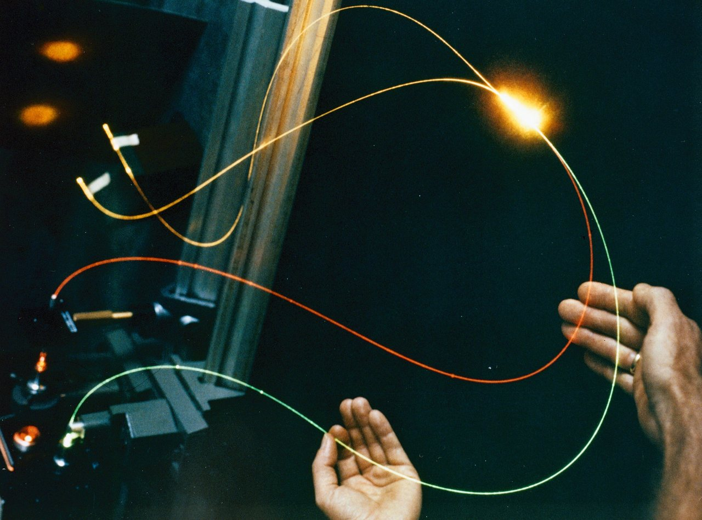
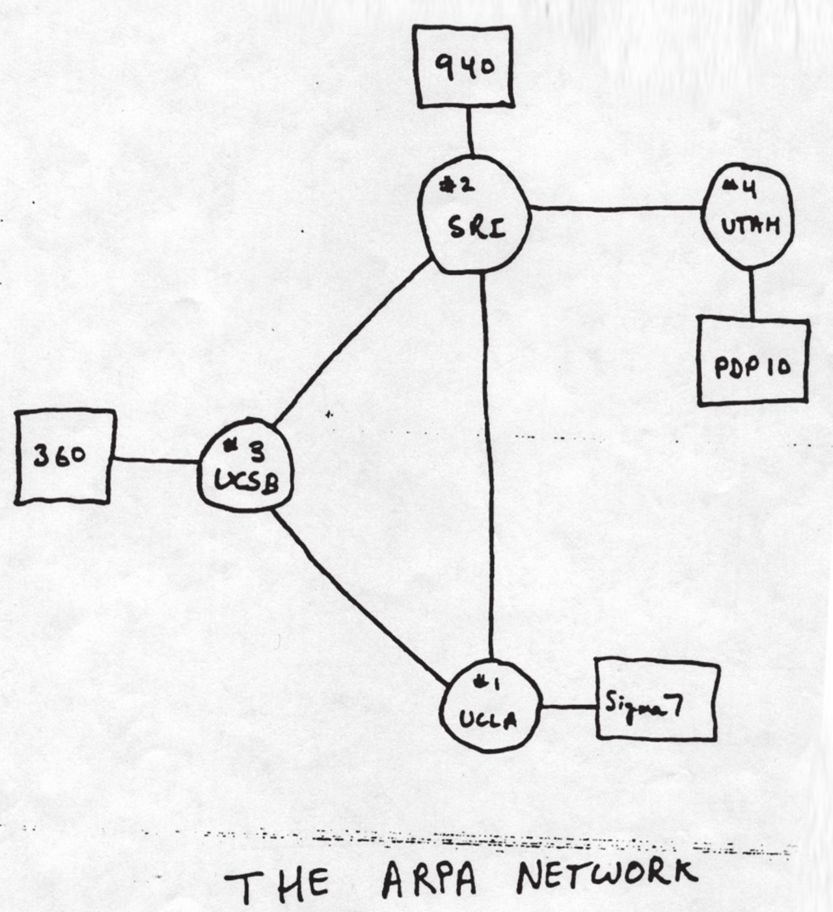
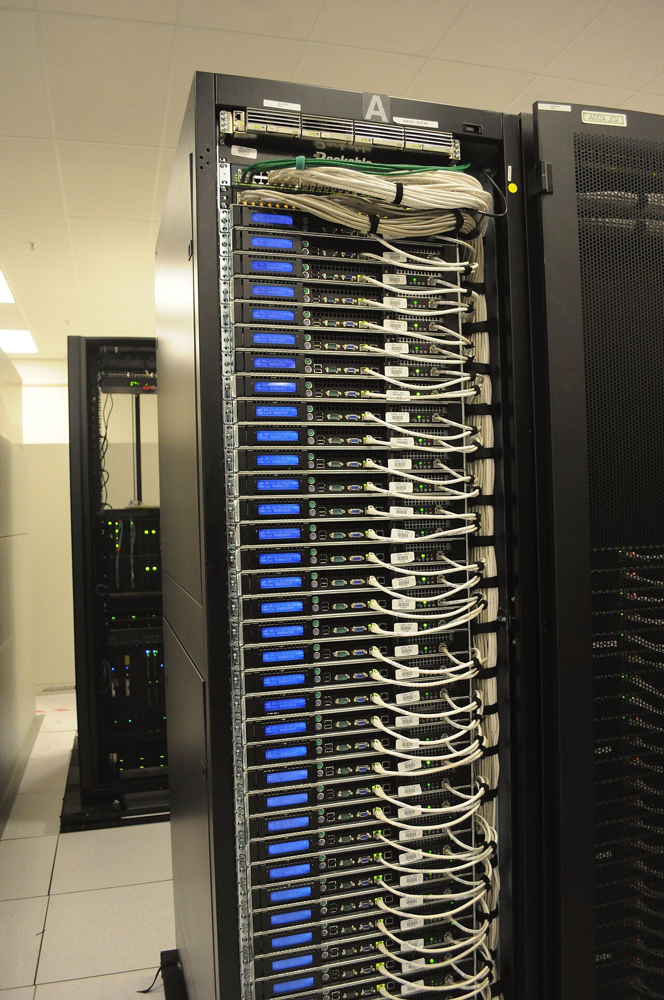
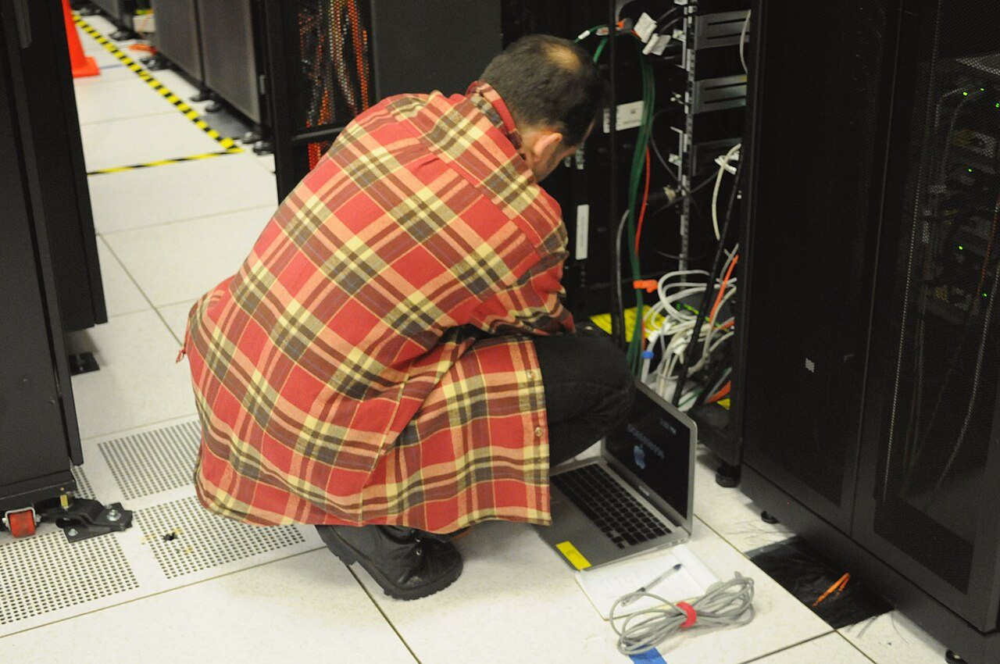
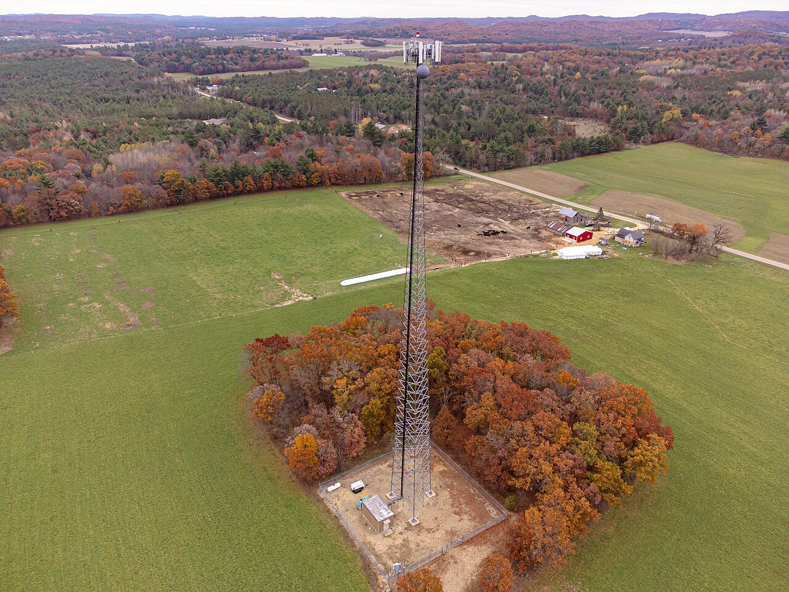
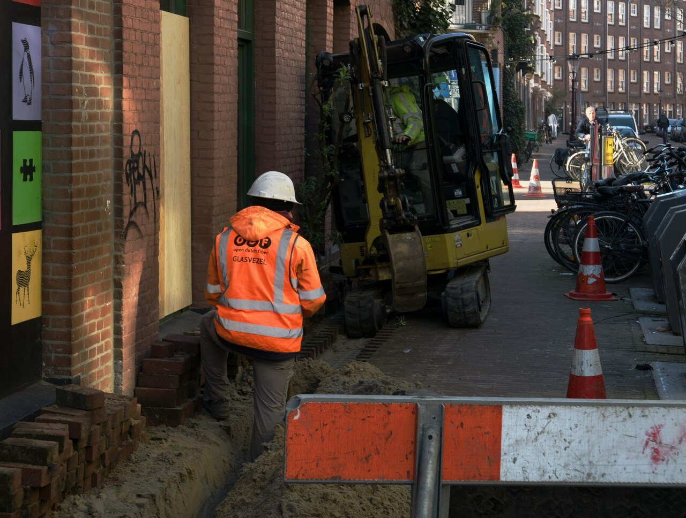
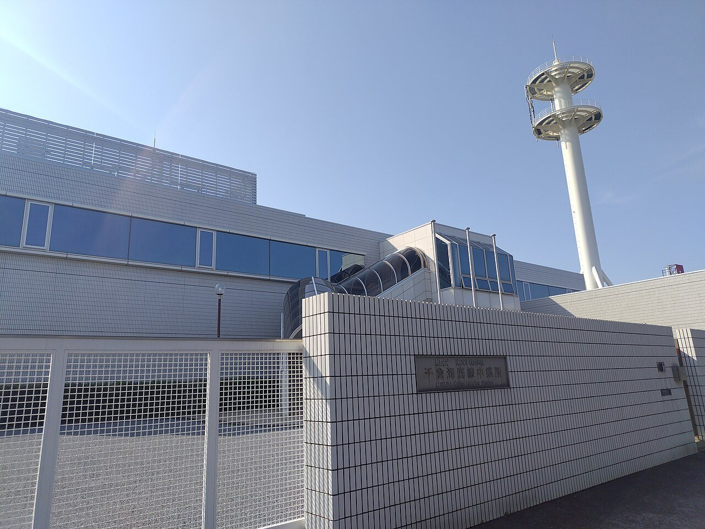
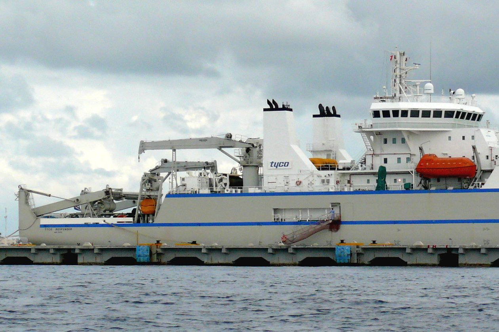

技術・発明 Technologyインターネットの情報は、どうやって届く？
スマホで動画を開くと、遠くのデータが一瞬で届きます。その裏で、データは小さな「小包」に分けられ、電波から光へ、ときには海の底のケーブルへとリレーされています。小包の図と太平洋の図で、届くまでの道のりをたどってみませんか。
2026.10.23 UP 約5分で読める 文：SOMOSOMO編集部
写真：Donald Huebler／NASA（1980年、パブリックドメイン）
アメリカ・ロサンゼルス、1969年10月29日の夜10時半。カリフォルニア大学ロサンゼルス校（UCLA）の学生が、約500km離れた研究所にあるコンピューターへ「LOGIN」と打ち込みました。ところが「L」「O」の2文字を送ったところで、相手のコンピューターが止まってしまいます。
こうして最初に届いた言葉は「LO」。のちのインターネットのもとになった「ARPANET（アーパネット）」の始まりです。それから50年あまり。今では地球の裏側の動画さえ、指先ひとつで数秒のうちに届きます。 データは、いったいどうやって旅をしているのでしょうか。
In a word
データは小さな小包（パケット） に分けられ、それぞれに宛先の番号 が付きます。小包は電波から光ファイバーへ、海外からなら海の底のケーブル へもリレーされ、届いた先で元どおりに組み立て直されます。
01
Small Parcels
1枚の写真は、2,000個ほどの小包に分かれて旅をする
インターネットでは、データを丸ごと1本の線で送ることはしません。写真も動画も、小さなかたまりに切り分けて送ります。このかたまりが「パケット」、英語で小包という意味です。家庭やオフィスの回線では、1個の大きさは最大1,500バイト（半角の文字にして1,500字ぶん）ほどがふつうです。
スマホで撮った3MB（メガバイト）ほどの写真なら、2,000個ほどの小包に分かれる計算です。どの小包にも、荷札にあたる「ヘッダー」が付きます。そこには宛先と差出人の番号、そして「全体の何番目か」を示す番号が書かれています。
Fig.01 小包は、別々の道を通って届く
送る側
1
2
3
4
受け取る側
1
2
3
4
1
2
3
4
3番は別の道
ルーター（宛先を見て、次の道を選ぶ機械）
届いた順がばらばらでも、番号で並べ直す
見どころは、赤い3番の小包。混み具合などによって、同じデータの小包でも別の道を通ることがあります。4つに減らした模式図で、実際の小包はもっと小さく、ずっと多く、道の数も桁ちがいです。
道の分かれ目には、「ルーター」と呼ばれる機械が待っています。ルーターは荷札の宛先を読み、次にどの道へ送るかを決めます。混んでいたり、途中の線が切れていたりすれば、別の道を選びます。小包の届く順がばらばらでも、番号を見れば元の順に並べ直せます。途中でなくなった小包は、送り直してもらいます。
この「小包に分けて送る」考え方は、1960年代に2人が別々に考え出しました。アメリカのポール・バランは、1本の線が切れても止まらない丈夫な通信網のために。イギリスのドナルド・デイヴィスは、コンピューターどうしが効率よくデータをやりとりするために。冒頭のARPANETも、このしくみで動いていました。

4か所から始まった網 1969年12月のARPANETを描いた手書きの図です。UCLA、スタンフォード研究所（SRI）、カリフォルニア大学サンタバーバラ校（UCSB）、ユタ大学の4つの丸が、つながっていた場所です。図：A sketch of the ARPANET in December 1969 ／DARPA（1969年、パブリックドメイン）
02
Names and Numbers
サイトの「名前」は、まず番号に読みかえられる
荷札に書く宛先は、住所のような番号です。これを「IPアドレス」と呼び、「192.0.2.1」のように数を並べて書きます。
でも私たちは、サイトを番号ではなく「www.example.jp」のような名前で開きます。そこで働くのが「DNS（ドメイン・ネーム・システム）」。名前を引くと番号が出てくる、インターネットの電話帳 です。1983年に、アメリカの研究者ポール・モカペトリスが考え出しました。
電話帳は、たくさんの「サーバー」（データをしまって配るコンピューター）に分けて置かれています。いちばん上の段が「ルートサーバー」です。13のグループ（名前）に分かれ、同じ中身の写しが世界中に置かれていて、いちばん近いものが答えます。
Fig.02 名前から番号を引くまで
ASK 「www.example.jp」は何番？ スマホは、まず通信会社などの問い合わせ係に聞きます。 ROOT ルートサーバー 「.jp のことは、.jp の係に聞いて」と教えます。 .JP .jp の係 「example.jp のことは、この係に聞いて」と教えます。 ANSWER サイトの係 「192.0.2.1 です」と番号を答えます。
見どころは、問い合わせ係が答えをしばらく覚えておくこと。次に同じ名前を聞かれたら、上の段まで聞きに行かずにすぐ答えます。流れを簡単にした模式図です。


電話帳も、データも、ここにある DNSの係も、動画やサイトのデータも、こうしたデータセンター（サーバーを大量に並べた建物）の中で動いています。左はアメリカの研究所のデータセンターにある機械の棚の裏側、右は同じ部屋で棚を点検する技術者です。写真：Rear of rack at NERSC data center 、Technician with laptop working on server rack at NERSC ／いずれも Derrick Coetzee（2011年、CC0）
03
The Relay
電波で飛ぶのは、最初のほんの少しだけ
スマホは電波でつながっているので、データも空を飛んでくるように感じます。けれど電波で進むのは、スマホから近くのWi-Fiの機械や携帯電話の基地局（アンテナのある中継所）までの、最初の区間だけ。その先の長い道のりは、ほとんどが地面の下や電柱を通る光ファイバー です。
Fig.03 スマホから、海の向こうまで
RADIO スマホ → 基地局・Wi-Fi ここだけ電波。小包を電波にのせて、近くのアンテナへ送ります。 FIBER 街の光ファイバー 地面の下や電柱を通るガラスの細い線を、光の点滅になって進みます。 ROUTER ルーターの分かれ道 通信会社の設備で宛先を読み、次の道を選びます。何度もくり返します。 UNDERSEA 海底ケーブル 海外のサイトなら、海の底の光ファイバーで海を渡ることもあります。 SERVER データセンターのサーバー サーバーを大量に並べた建物です。注文を受け取り、データを小包にして、同じように送り返します。
見どころは、電波の区間が1番目だけであること。国内のサイトなら、4番目の海外へ渡る海底ケーブルは通りません。大手の動画などは、国内に置いた複製用のサーバーから届くことも多くあります。
光ファイバーは、髪の毛ほどの細さのガラスの線です。中心の部分に入った光は、まわりとの境目ではね返されながら、外にもれずに進みます。光を細かく点けたり消したりして、0と1の信号を運びます。電気を通す銅の線にくらべて信号が弱まりにくく、はるかに多くのデータを遠くまで運べます。


空から地面の下へ 左は、アメリカ・ウィスコンシン州の牧草地に立つ携帯電話の基地局。てっぺんの白い板がアンテナです。右は、オランダ・アムステルダムで歩道を掘り、光ファイバーを埋めている工事です。写真：Lattice cell tower-3 ／Wikideas1（2023年、CC0）、photo of road workers, laying fiber optic cable ／Fons Heijnsbroek（2024年、CC0）
04
Under the Sea
海外のデータは、空ではなく海の底を通ってくる
海外のサイトを開くとき、データは人工衛星を経由していると思うかもしれません。実際は、ほとんどが海の底に沈めた光ファイバーの線、「海底ケーブル」を通っています。総務省の検討会の報告書（2026年7月）によると、日本の国際通信の約99%を海底ケーブルが担っています。
ケーブルが陸に上がる場所には、「陸揚局（りくあげきょく）」という建物があります。日本では、千葉県の房総半島と三重県の志摩半島に集まっています。

海と陸の境目の建物 千葉県南房総市の千倉にある、KDDIの陸揚局です。看板の名前は「海底線中継所」。海の底を通ってきたケーブルはここで陸に上がり、国内の光ファイバーの網につながります。写真：KDDI CHIKURA Cable Landing Station ／妖精書士（2025年、CC0）
海底ケーブルの中の光は、1秒に約20万km進みます。それでも海は広く、東京からロサンゼルスまでは直線で約8,800km。光が行って帰ってくるだけで、0.09秒ほどかかります。実際のケーブルは遠回りし、途中の機器も通るので、往復はおよそ0.1秒。まばたき1回ぶんほどの時間です。
Fig.04 光の速さでも、太平洋の往復には0.1秒
東京
ロサンゼルス
直線で約8,800km
太平洋
行き 約0.044秒
帰り 約0.044秒
0秒
往復 約0.1秒
赤は遠回りや機器のぶん（目安）
見どころは、黒と灰色の帯だけで往復の時間の9割近くを占めること。光の速さそのものが、時間のかかる原因です。赤い部分の長さはケーブルの道すじや機器によって変わります。

ケーブルを沈め、直す船 メキシコのコスメル島で撮られた、海底ケーブルを敷いたり修理したりする専用の船です。船の中に長いケーブルを巻いて積み、少しずつ海へ送り出します。写真：CS Tyco Responder ／Ken Thomas（2008年、パブリックドメイン）
05
By the Numbers
電話帳は近くに、通り道は海の底に
2,049か所 世界に置かれた、ルートサーバー（DNSのいちばん上の段）の写し。13の名前を12の組織が受け持つ2026年10月23日時点、root-servers.org
0.37% アメリカの国際通信の容量のうち、人工衛星が占める割合。残りのほとんどは海底ケーブル2013年ごろ、アメリカ連邦通信委員会のデータ（TeleGeography による）
150万km超 世界で使われている海底ケーブルの長さの合計。地球を37周するほど2026年初め時点、TeleGeography
Here's the Fun Part
ここが面白い！
世界のデータを運ぶ海底ケーブルも、深い海の底では庭の水まき用のホースほどの太さ しかありません。その中で、髪の毛ほどの光ファイバーが光を運んでいます。
そんな線が、年に200件ほども傷つきます。TeleGeographyによると、故障の3分の2は漁船の網や船の錨（いかり）による事故。よく話題になる「サメがかじる」は、2007〜2014年の記録では0件でした。
切れたケーブルは、専用の船が直します。深い海では、引っかけた直後にケーブルを切る特別な道具で、片方ずつ海面へつり上げ、新しい部分をつなぎます。長くなったぶんは、海底にU字形に置くそうです。
次に海外の動画がすっと再生されたら、思い出してみてください。元をたどれば、それは海の向こうから、ホースほどの線を通ってやってきたデータです。
出典・参考
ARPANET （Wikipedia 英語版）：1969年10月29日午後10時30分（太平洋時間）、UCLAからSRIへ「login」と送り、2文字「lo」のあとで相手のコンピューターが止まった、1969年12月5日までに4か所の網ができた、1983年1月1日にTCP/IPへ切りかえPacket switching （Wikipedia 英語版）：1960年代はじめにポール・バラン、1965年にドナルド・デイヴィスが別々に考案、パケットは別々の道を通り、宛先で番号をもとに組み立て直される、ヘッダーには宛先・差出人などが入るMaximum transmission unit （Wikipedia 英語版）：イーサネットで一度に送れる大きさの上限は1,500バイトIP address （Wikipedia 英語版）：ネットワークにつながる機械に割り当てる番号、「192.0.2.1」のような書き方Domain Name System （Wikipedia 英語版）：1983年にポール・モカペトリスが考案、インターネットの電話帳にたとえられる、ルートサーバーは13のグループで、写しがエニーキャスト（いちばん近い写しが答えるしくみ）で世界中に置かれるRoot Server Technical Operations Association （root-servers.org）：2026年10月23日時点で、12の組織が運用する2,049か所の稼働中の写し、13のルートサーバーOptical fiber （Wikipedia 英語版）：光ファイバーの中の信号は1秒に約20万km（真空中の光の約3分の2）、中心と外側の境目での全反射で光を閉じこめる国際海底ケーブルの防護等に関する検討会 報告書 （総務省、2026年7月10日公表。報告書PDF ）：日本の国際通信の約99%を担う、陸揚地点が房総・志摩に集中Submarine Cable Frequently Asked Questions （TeleGeography）：2026年時点で使用中・計画中の海底ケーブルは600本超、2026年初めの時点で使用中の総延長は150万km超、深い海ではホースほどの太さ、故障は年に約200件で3分の2は漁船や錨などの事故、魚（サメを含む）にかまれた故障は2007〜2014年に0件、衛星はアメリカの国際通信容量の0.37%（FCCのデータ。最後に公表された2013年ごろの数字）Submarine communications cable （Wikipedia 英語版）：海を越えるデータ通信の大部分を海底ケーブルが運ぶ、ケーブル敷設船、深い海の修理では引っかけた直後にケーブルを切る道具で片方ずつつり上げて新しい部分をつなぎ、余ったぶんは海底にU字形に置くContent delivery network （Wikipedia 英語版）：動画などのデータの写しを利用者に近いサーバーに置いて配るしくみBlinking （Wikipedia 英語版）：まばたき1回は平均100〜150ミリ秒（100〜400ミリ秒とする資料もある）距離：東京〜ロサンゼルス（約8,800km）、UCLA〜SRI（約500km）は、2地点の緯度・経度から地球の表面に沿った最短距離として編集部が計算
写真：すべてパブリックドメインまたは CC0。扉の写真はFIBER OPTICS CABLES ／Donald Huebler（NASA。撮影者・所属・1980年の撮影日はアメリカ国立公文書館（NARA）の目録による。パブリックドメイン。白い縁を切りとって使用）。そのほかのクレジットはそれぞれの写真の下に記しています